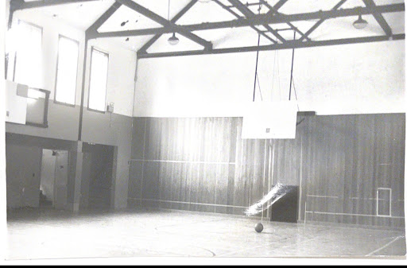

20th century tour point 4
Story:
Mrs. Hall's changes to CA campus were not limited to building the Chapel. During her tenure, the Stufac was also transformed. Entering the Stufac, you might assume that it was always a dining hall, but [wait a beat] you’d be wrong. This was Concord Academy’s first gym. Prior to the 1950s, the dining hall was located in Russell Robb, an older building that was demolished to make way for the SHAC, while the current Stufac was instead used as a gymnasium.
Primarily used for sports practice and games, the space also served as an auditorium. As you can see on your devices, the stage was set against the north wall. CA’s first play, Gilbert and Sullivan's The Mikado, was performed here. After 1950, the gym went under major renovations, converting it into a dining hall. A second floor was constructed--now referred to as the upper stufac--as a place for students to be in each other’s company; students could take books from the newly installed bookshelves or hang out on couches with each other. Like the chameleon mascot that represents CA's adaptability, the school in its physical plant and in its national reach, reinvented itself in the second part of the 20th century.

Stufac in the 1950s. Photo provided by Concord Academy